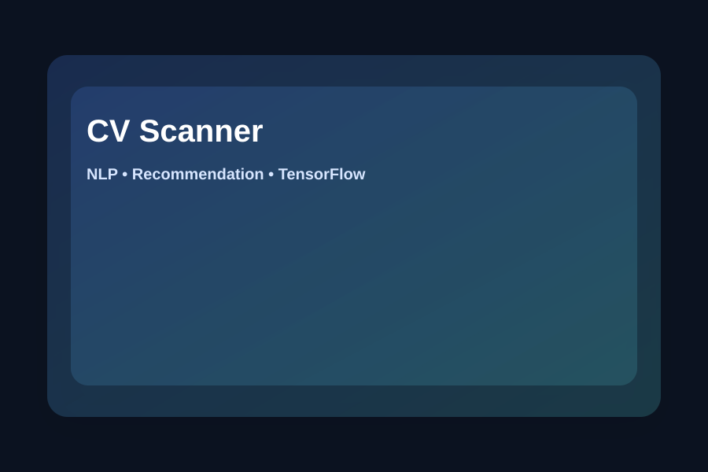

CV Scanner & Job Recommendation System
Bangkit Academy Capstone • ML Lead • TensorFlow
Led the machine learning workflow for a system that allows users to upload a CV and receive job category recommendations with relevant job links.

Dataset: ~200 CV documents (self-collected).
Role
Machine Learning Division Lead
- Managed ML workflow and evaluation
- Coordinated tasks across the ML team
- Collaborated with mobile and cloud teams for integration
Methods
TensorFlow
Model Training
Accuracy/Precision/F1
Flask API
Result: ~70% model performance (from CV).